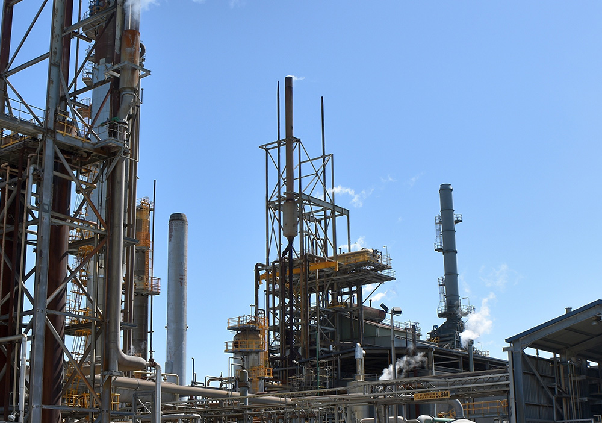

> 회사소개 > 기업개요
기업개요
삶의 가치향상을 위해
끊임없이 도전해 나가는 기업
- 불화수소
- 환경,안전
- 품질
-
- 불소화학 선두자
- (주) 후성 은 40여년 간 축적된 불소화학 기술과 고도화된 공정노하우를 기초로 국내 최고의 제품을 생산하여 불소화학의 선도적 위치를 확보하고 있으며 자동차, 철강, 반도체, 건설, 환경산업 전반에 사용되는 화학소재 제품을 공급하고 있습니다.
-
- 글로벌 경쟁력
- 특히 냉매나 2차전지 전해질, 반도체 가스 등은 환경규제에 의한 높은 진입장벽과 고도화된 기술을 통해 국내에서는 유일하게 생산, 판매하고 있습니다.
-
- 미래지향적
- (주)후성은 현재에 만족하지 않고 지속가능한 미래의 성장동력 확보를 위하여 미래산업에 대한 투자와 신기술 개발을 통해 환경친화적인 제품으로 깨끗한 미래를 만들 것입니다.

-
- 주요사업
- 특수가스, 2차전지, 무기물화물, 냉매
-
- 계열사
- 후성HDS(주), 한국내화(주), 후성정공(주),
퍼스텍(주), 일광이앤씨(주), (주)트래닛,
(주)한텍, 유콘시스템(주) + 해외법인 13개
-
- 대표이사
- 허국
-
- 설립일
- 1983.06.23